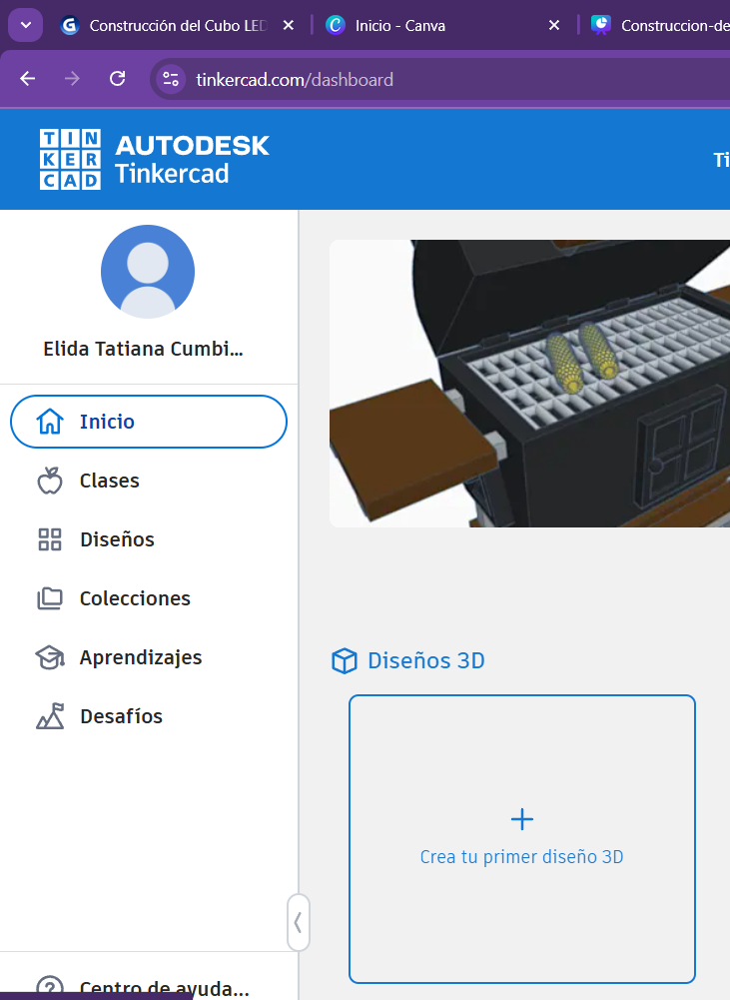
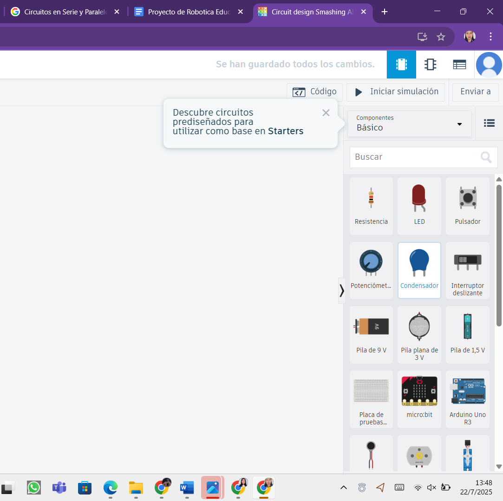
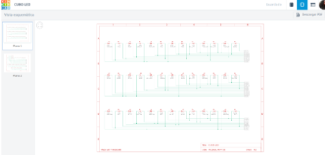
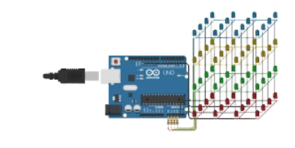

TINKERCAD
PASOS
1. Abrir en el navegador Tinkercad.

2. En la sección de Circuitos, seleccionamos la opción de crear para realizar la simulación del cubo LED.

3. Tinkercad construcción de los pisos del Cubo LED.

4. Vista sistematizada

5. Funcionalidad en Tinkercad

Link del simulador Tinkercad: